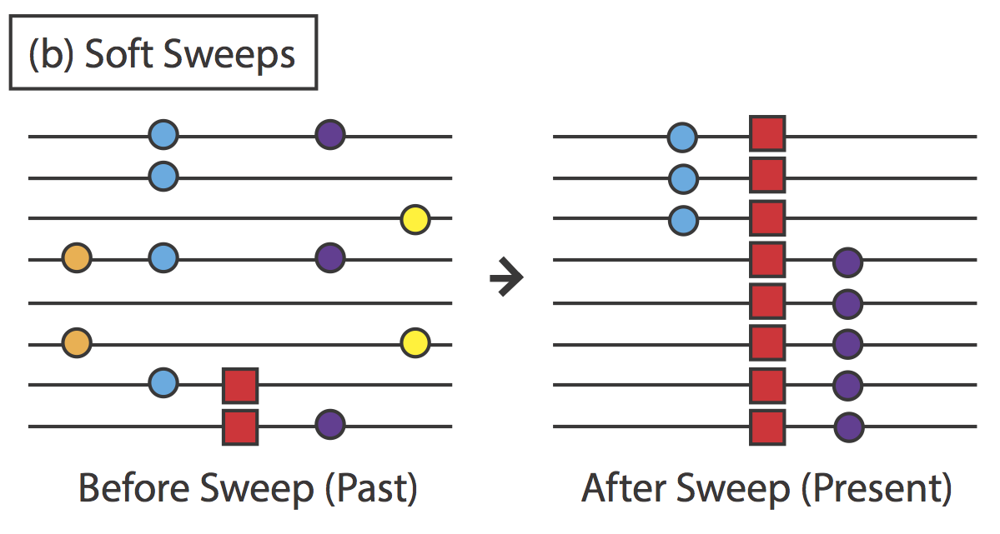
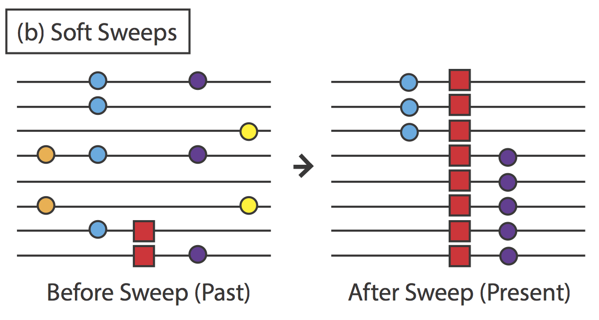

Summary
The goal of this visualization to illustrate the main stages of a research project through an example related to population genetics. The main stages are data acquisition which is done by a generative model in this example; exploring the observed data; and the analysis/inference. You need to make decisions in each stage of the project and you can explore here how your decisions influence the final result (the inference).
The data comes from population genomics simulations. A central goal of population genomics is to identify regions of the genome that show signs of having undergone positive selection. These positively selected regions of the genome may indicate locations of adaptive genes, and thus provide insight into the adaptive evolutionary history of a species. We simulated various haplotypes (individual DNA sequences) that belong to five different classes of genomic regions: neutral (ne), hard sweep (hs), linked to hard sweeps (hl), soft sweep (ss), and linked to soft sweeps (sl) - see the Generative model section for more details. We simulated 1500 different haplotypes (500 haplotypes per class) and computed 41 different summary statistics for each haplotype. This is our data set.
We explore the data set by calculating the correlation coefficient matrix and the Fisher's Discriminant Ratio (see below for details).
The goal of the analysis is to perform classification: we want to know what is the class of a new haplotype given its 41 summary statistics. To do that, first we divide the data set into training (75%) and test sets (25%). We train a classifier on the training set where the classes are known to the classifier, and evaluate the classifier on the test set where the classes are known to us but not to the classifier. We train a Naive Bayes Classifier with Kernel Density Estimators (KDE). The classifier is evaulated on the test set by calculating the classification score and the confusion matrix.
Please follow the arrows that will guide you through the various stages.
Generative model
We study the two main models of positive selection, hard sweeps and soft sweeps. Figures (a) and (b) show a population of haplotypes (individual DNA sequences, represented by lines) before and after a hard sweep (a) and a soft sweep (b). The colored circles represent non-selective mutations, and the red square represents a beneficial mutation.
 

For a hard sweep (a), there is initially a single haplotype in the population that carries a new beneficial mutation (red square). Selection acts to increase the frequency of the haplotype that carries the beneficial mutation until it is the only haplotype remaining in the population. The haplotype is thus said to “sweep” through the population to “fixation”, which reduces the genetic diversity near the sweep (loss of the orange, blue, and yellow mutations), and increases the frequency of “linked” mutations that also happen to be carried on the same haplotype as the beneficial mutation (purple mutation).
A soft sweep (b) differs from a hard sweep in that there is initially more than one haplotype that carries the beneficial mutation (which may have only recently become beneficial due to a change in the environment, for example). Thus, in a soft sweep, multiple haplotypes may sweep through the population to fixation (the haplotype carrying the purple mutation and the haplotype carrying the blue mutation), while still reducing genetic diversity near the sweep (loss of the orange and yellow mutations).
Various tests based on different summary statistics have been proposed to detect hard sweeps and soft sweeps. While these tests have high statistical power to detect hard sweeps, they have low statistical power to detect soft sweeps because soft sweeps leave much weaker genetic signatures. Our goal is to combine information from different summary statistics to classify regions in the genome as one of five different classes: neutral (non-selective) (e.g. orange and yellow), hard sweep (e.g. red in (a)), linked to hard sweeps (e.g. purple in (a), soft sweep (e.g. red in (b)), and linked to soft sweeps (e.g. blue and purple in (b)).
We use the software MSMS (Ewing and Hermisson 2010) to simulate the evolutionary process for a genomic region evolving under each of the five different classes (neutral, hard sweep, linked to hard sweep, soft sweep, linked to soft sweep) many times. For each simulation, we get as output simulated genetic data with which we compute the value of each of 41 different summary statistics. Because we simulated the genetic data, we also know the true underlying class associated with the genetic data. Our data set contains the true underlying class and the value of each summary statistics from 1500 simulations.
References:
Ewing, G., and Hermisson, J. (2010). MSMS: A coalescent simulation program including recombination, demographic structure and selection at a single locus. Bioinformatics, 26(16), 2064–2065. http://doi.org/10.1093/bioinformatics/btq322
Analysis/inference
Confusion Matrix
The confusion matrix illustrates in what way the classifier confuses classes. The Ci,j element of the matrix is equal to the fraction of observations known to be in group i but predicted to be in group j. A perfect classifier in our case would have 0.2 in the diagonal and 0 in the off-diagonal locations (no confusion). Hover over the grid cells to see Ci,j. As you adjust the feature selection and the KDE bandwidth sliders (below), the values change.
Classification Scores
The classification score describes what fraction of the points in the test set were correctly classified. We performed a large number of simulations to see how randomly splitting the data set into training and test sets influences the score. The fraction of simulations with a given test score is shown in the figure.
Log10 of Kernel Density Bandwidth
The KDE has a bandwidth parameter that controls the smoothness of the estimated distributions for each summary statistics. If the parameter is too small, the estimated distributions will become too spiky (the variance is too high). If the parameter is too large, the estimated distributions will become too flat (the bias is too high). The optimal value of the bandwidth maximizes the classification score. Move the slider to find the optimal value of the bandwidth and observe how the confusion matrix changes!
Observed data
Correlation Coefficient Matrix
The correlation coefficient is a measure of linear correlation between two summary statistics in our data set. Its value is between -1 (strong negative correlation) and +1 (strong positive correlation). Hover over grid cells to see the names of two summary statistics and their correlation coefficient.
As you adjust the feature selection slider (on the right), the corresponding part of the matrix will be shaded out.
Fisher's Discriminant Ratio (FDR)
The Fisher's Discriminat Ratio describes how good a summary statistic (or feature) is at disciminating between the classes. Hover over the points to see the name of the summary statistic and its Discriminant Ratio.
Feature selection
Moving this slider from right to left progressively eliminates summary statistics with lower Discriminant Ratios. Observe how many features you can exclude before you see a significant drop in the classification score (above)!